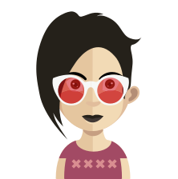
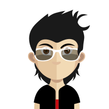

КрамскойПосле setup ловлю 500 на любом разделе админки, в логе — недостающая колонка saved.
Собственная модель: вместо папок — командная строка с токенами (папка, состояние, автор и период становятся снимаемыми чипсами внутри поля поиска), сверху — колода фокуса из непрочитанных, ниже — единая хронологическая ось, где входящие и исходящие идут вперемешку и различаются цветом левой грани. Чтение — в панели рядом, без ухода со страницы.
Папка — такой же токен, как и всё остальное: «Входящие» можно снять и получить общий поток. Колода показывает только непрочитанное и даёт разобрать его не открывая.

КрамскойПосле setup ловлю 500 на любом разделе админки, в логе — недостающая колонка saved.
Группе «Модераторы» не видна кнопка загрузки, хотя в правах галка стоит.
Сохранено и до сих пор не прочитано — строки разъезжаются на ширине 1024px.
Позиции переехали на второй склад, срок доставки не меняется.
Входящие (синие), исходящие (зелёные), сохранённые (жёлтые) и письма от удалённых аккаунтов (красные) идут одной хронологией — видно диалог, а не две разные папки.
Сегодня, 12 августа 4 события
Вчера, 11 августа 3 события
9 августа 2 события

Когда токены отфильтровали всё, «Поток» предлагает снять последний добавленный фильтр, а не абстрактное «ничего не найдено».
У dev_kostya нет сохранённых писем. Без токена «Сохранённые» от него найдётся 19 сообщений за всё время.
Колода фокуса листается пальцем со snap-остановками, ось времени сжимается в двухуровневую строку, панель чтения встаёт под ленту на всю ширину.
После setup ловлю 500 на любом разделе админки.
Кнопка загрузки не видна модераторам.
Сегодня 4 события
Вчера 3 события